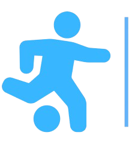

CORRIDA DE BARCOS
Outra tradição muito antiga, muitas da vezes realizada pela colônia
dos pescadores da cidade para celebrar dias festivos ( Dia dos pais/
pescadores/trabalhador e etc ). Pescadores se reúnem para participar.
Essa corrida persiste é feita a partir de um trajeto feito da praia do gunga até o cais da cidade.
FESTIVAL DO MARISCO
Este evento tem o objetivo de contribuir para a
promoção e valorização da atividade extrativista do
marisco e da culinária local. O festival
também promove a cultura dos marisqueiros com
vários dias de festas (Shows), recebendo pessoas das
cidades circunvizinhas.


ESPORTE
O municipio de Roteiro-Al, também abrange a área do esporte.
oferecendo diversas modalidades como Futebol, Capoeira, Judo,
Jiu-jitsu, Karatê, Muay Thai, entre outros.